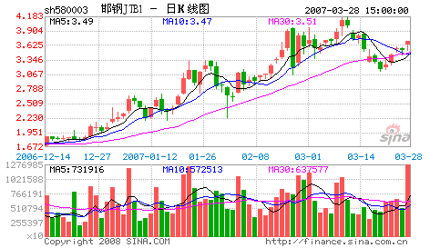

收购中国，从宝邯之争说起！
2006/6/2 21:44:58

资本全球化，就意味着资产价格的全球化定价，最近国内房价、油价的变动正反映了这种不可逆转的大趋势，而这一切，最终也会最充分地在资本市场中体现，特别，当国内资本市场全流通后，这种反映就不单单是一种理论了。
资本市场归根结底是通过虚拟价格来实现现实价值的占有，而这一虚一实的游戏就有了资本市场的诸多故事，当然最多的故事都是望梅止渴、画饼充饥一类的，但对于大资金来说，除了利用这种画饼游戏去套人套钱外，更重要的还是利用这种虚拟机制达到现实的目的。
这几天，其实私下已不是新闻的宝邯之争成了当下的新闻，且不说这是否又是一个画饼游戏，这和十几年前的宝延之争都可以说是开风气之先了。后者是在一个具体的全流通个股中玩的游戏，而前者却是在整体全流通背景下必然出现的游戏。
前两天，邻国的一位资本市场大玩家来北京，在一起聊了一个下午。他那里，因为最近文化输出十分牛，现在流行文化概念，除了原来控制的几个上市公司，他刚收购的一个相应股票三个月就涨了十七倍。刚在东南亚某国收了一个赌场的他，这次来却不是为了赌，而是要寻找进入中国资本市场的机会，原因之一是他那的某税收政策有大变化，其次，他希望在两国资本市场间嫁接一个流动的渠道，最后，最重要的还是目前中国的资产价格严重偏低，这就意味着玩大游戏的机会。
那人拿着收集好的几十家国内上市公司的资料，希望能选择合作收购其中的三、四家。本ID当然是很专业地和他探讨这些问题，而这，最近一、两年其实已经不是一个很新鲜的事情了。资本全球化，意味着资本必然通过任何可能的渠道在各国中流动，如果以前收购中国可能还是一个神话，那现在，神话已不再。看看，在目前国内的资产价格下，几亿美金就可以控制一个国家大型钢铁企业，这一切说明了什么，警示了什么，大概就不用多说了。